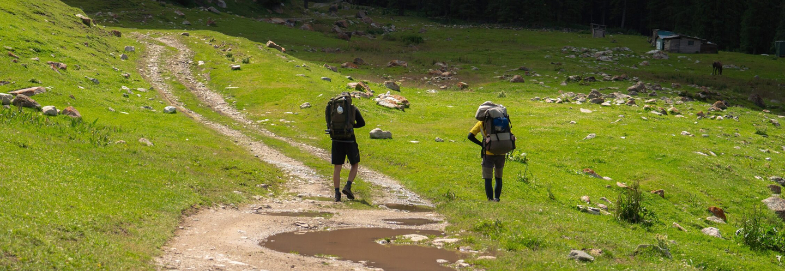

Issyk-Kul
The pearl of Tien Shan. Majestic mountain passes, deep gorges, and crystal-clear high-altitude waters.
Explore Region
From high-altitude alpine lakes to wild gorges and ancient nomadic paths
The pearl of Tien Shan. Majestic mountain passes, deep gorges, and crystal-clear high-altitude waters.
Explore Region
The most remote and authentically nomadic region of Kyrgyzstan.
Explore Region
Gateway to alpine mountaineering and Ala-Archa national park.
Explore Region
Historical legends and tranquil river trails.
Explore Region
Wild walnut forests and hidden mountain lakes.
Explore Region
The southern capital and base for Lenin Peak.

Steppes, canyons, and majestic modern and natural landscapes.
Explore Region
The Pamir Highway and breathtaking high-altitude mountain ranges.
Explore Region
Unique rock formations and the legendary endemic Айгуль flower.
Explore Region